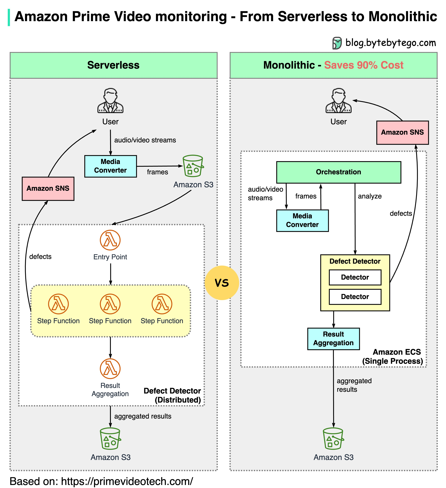

Why did Amazon Prime Video monitoring move from serverless to monolithic? How can it save 90% cost?
The diagram above shows the architecture comparison before and after the migration.
Prime Video service needs to monitor the quality of thousands of live streams. The monitoring tool automatically analyzes the streams in real time and identifies quality issues like block corruption, video freeze, and sync problems. This is an important process for customer satisfaction.
There are 3 steps: media converter, defect detector, and real-time notification.
What is the problem with the old architecture?
The old architecture was based on Amazon Lambda, which was good for building services quickly. However, it was not cost-effective when running the architecture at a high scale. The two most expensive operations are:
The orchestration workflow - AWS step functions charge users by state transitions and the orchestration performs multiple state transitions every second.
Data passing between distributed components - the intermediate data is stored in Amazon S3 so that the next stage can download. The download can be costly when the volume is high.
Monolithic architecture saves 90% cost
A monolithic architecture is designed to address the cost issues. There are still 3 components, but the media converter and defect detector are deployed in the same process, saving the cost of passing data over the network. Surprisingly, this approach to deployment architecture change led to 90% cost savings!
This is an interesting and unique case study because microservices have become a go-to and fashionable choice in the tech industry. It’s good to see that we are having more discussions about evolving the architecture and having more honest discussions about its pros and cons. Decomposing components into distributed microservices comes with a cost.
What did Amazon leaders say about this?
Amazon CTO Werner Vogels: “Building evolvable software systems is a strategy, not a religion. And revisiting your architectures with an open mind is a must.”
Ex Amazon VP Sustainability Adrian Cockcroft: “The Prime Video team had followed a path I call Serverless First…I don’t advocate Serverless Only”.